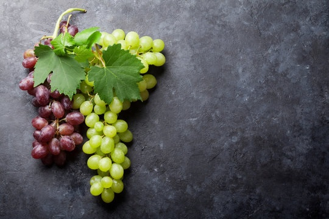
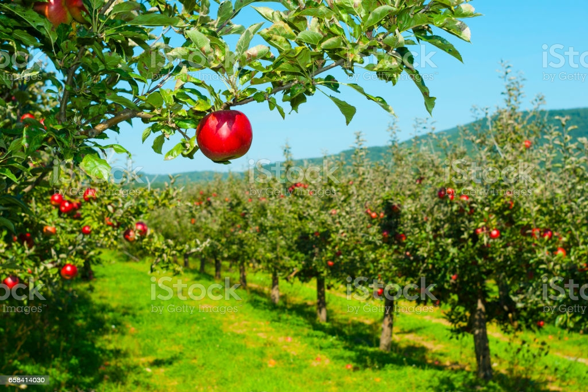

{% extends 'bootstrap/base.html' %}
{% import "bootstrap/wtf.html" as wtf %}

{% block styles %}
{{ super() }}
<style>
  .footer {
    position: fixed;
    left: 0;
    bottom: 0;
    height: 60px;
    width: 100%;
    background-color: #333;
    color: white;
    text-align: center;
    padding-top: 20px;
  }
  .sli{
    object-fit:cover;
    opacity: 0.8;
  }
  td, tr{
    padding-top:40px;
    padding-bottom:20px;
  }
  tr{
    height:80px;
  }
  table{
   margin-left:80px;
   width:95%;
  }
</style>
<link rel="stylesheet" href="{{ url_for('static', filename='style.css') }}">
{% endblock %}


{% block title %}
Crop recomendation
{% endblock %}


{% block content %}

<div class="topnav">
  <a style="background-color: #333;color: white;font-size: 20px;font-weight: bold;">Crop Recomendation</a>
  <a href="about" style="float:right">About</a>
  <a href="crop" style="float:right">Crop</a>
  <a class="active" href="" style="float:right">Home</a>
</div>

<div class="container" style="width:100%;">
  <div class="row">
    <div class="mx-lg-auto mx-md-auto">

      <div class="pt-5">
        
      </div>
      <div>
      <table style="border-width: 0px;">
        <tr >
          <td></td>
          <td></td>
          <td></td>
        </tr>
        <tr>
          <td></td>
          <td></td>
          <td></td>
        </tr>
      </table>
      </div>
    </div>
  </div>
</div>

<div class="footer">
  <p>&copy; 2021 </p>
</div>
{% endblock %}